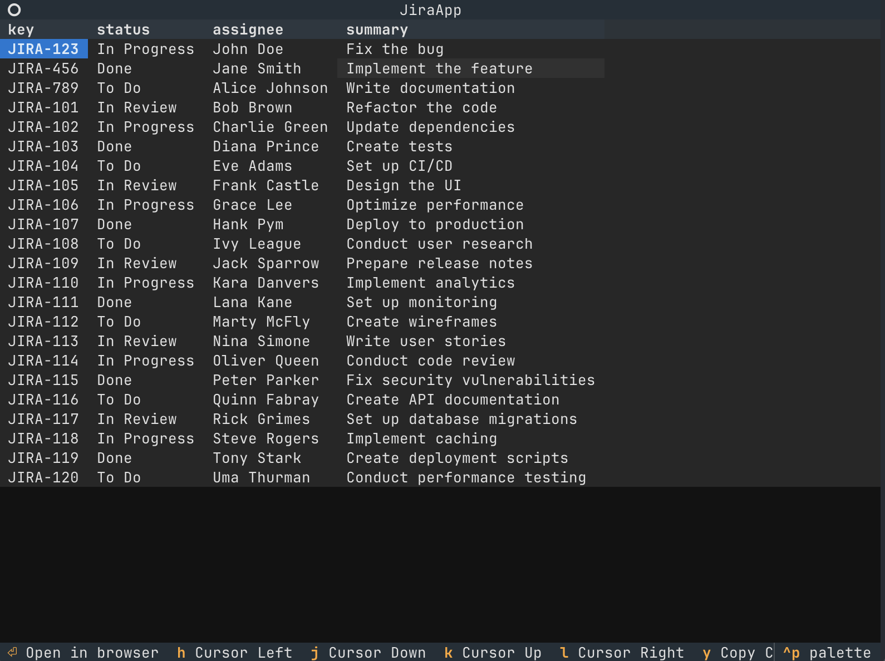

You're probably thinking that there are already plenty of tools written in Python.
But I see that most of the popular tools like mypy and flake8 are built for development environments. In contrast, general purpose cli tools tend to be built in other languages, for example most of the docker/kubernetes clis are built in go.
This wasn't always the case, let's set our mind to the era of Python 2. 2.7 enjoyed an almost 10 year lifespan whilst the Python community was working on Python 3. The stability of 2.7 meant that it was easy to distribute tools as Python scripts.
Then Python 3 arrived with lot's of nice stuff: f-strings, dataclasses, pattern-matching etc.. But no more stability, a script working on 3.5 might have problems on 3.7 and so on. 3rd party dependencies adding extra dimensions to the problem.
Compiled languages like go and rust don't tend to have this problem as the binary executable is distributed, the executable no longer depends on the language itself, but on the platform it's running on. So tools must be built for every platform it's expected to run on. However in many cases this is more manageable than Python's versions and dependencies.
Writing a terminal app
Fast forward to the present. I've been keen on writing scripts to automate some of the more mundane tasks. I wanted to write a terminal app to display my JIRA tickets, so I don't have to deal with the clunky web UI.
I've' heard a lot of good things about textual, not having the patience to learn rust, I gave textual a go.
I proudly present my little TUI (Terminal UI):

Source code here
The app itself is very simple, we're just displaying the tickets and title. Nothing fancy, speedy and to the point.
I won't go into too much depth on the code itself, textual worked well and was fun to use. Instead let's dive into how we distribute and run the script.
So how has Python fixed its problems?
In short, uv!
uv has been all the rage lately, for good reasons. Thanks to uv package management in Python got a lot better.
In my specific case I used uv for the following.
- manage dependencies such as Python version and packages
- execute the script in an isolated Python environment without any hassle.
Let me elaborate, at the top of my script we have:
#!/usr/bin/env -S uv run --script
# /// script
# requires-python = ">=3.12"
# dependencies = [
# "requests",
# "textual",
# "platformdirs",
# "tomli-w",
# "keyring",
# ]
# [tool.uv]
# exclude-newer = "2025-04-09T00:00:00Z"
# ///
PEP-723 inline metadata creates a standard to setting the metadata like dependencies at the top of the file.
Breaking down each line we have requires-python = ">=3.12" for the python version and then the list of dependencies.
Finally a uv specific exclude-newer that acts as a pseudo lockfile, limiting dependencies by date instead of by version.
This is a whole Python project in one, and uv will happily run it with a single command:
$ uv run --script jira-tui.py
Note the shebang #!/usr/bin/env -S uv run --script, a neat trick from Rob Allen. On linux the shebang line will save us from typing uv run --script every time.
Essentially uv has become the one stable runtime, as long as the user has uv scripts may be distributed easily.
Python's Broad Compatibility
Just distributing the script is not enough, we also need to make sure that the end user's platform can execute the script.
Owing to Python's popularity, most packages support all major OS's and CPU architectures out of the box.
In fact, it's so comfortable you hardly have to think about it:
- textual: the main framework was designed from the ground up to be as compatible as possible
- keyring: used to store credentials uses different secure storage based on the OS.
- standard lib packages like
pathlibandwebbrowserall work cross platform.
The one time I actively considered platforms was where to store the config file, which was simply solved using the platformdirs package.
How does python compare to other languages?
The rust and go tools are definitely here to stay. In fact, uv is almost completely written in rust. The main reason to use other languages are performance and concurrency. In my (biased) experience performance is not a priority for terminal applications, but your experiences may vary.
Python's strength lies in the fact that it's simple, easy to get started with and iterate on. This applies even more so with cli scripting, where we generally one quick changes, small feedback loop and to not think about releases.
The takeaway here is that whilst Python doesn't fit every use case, uv has helped it level the playing field and made scripting fun again!